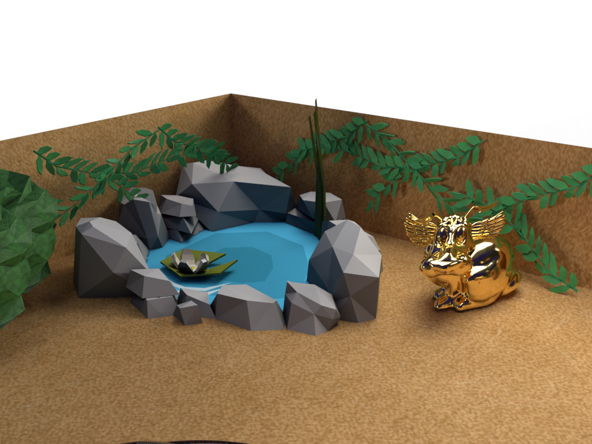
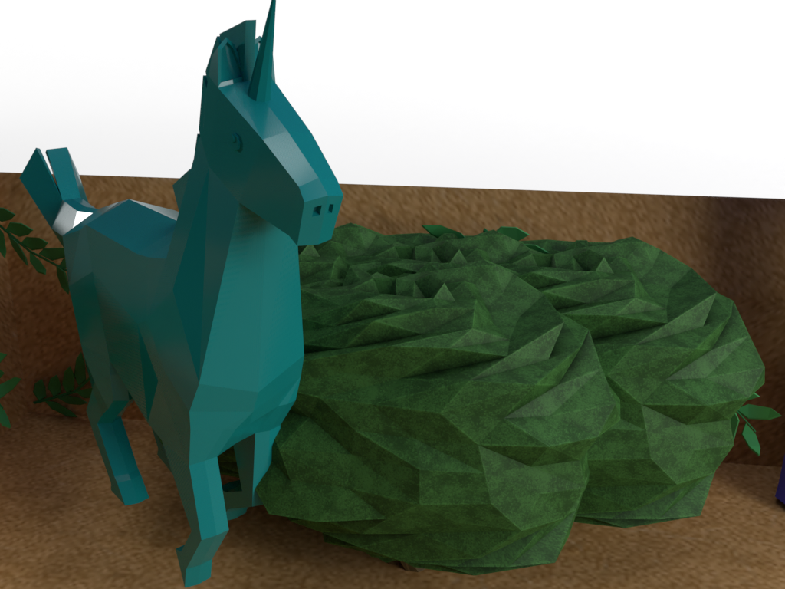
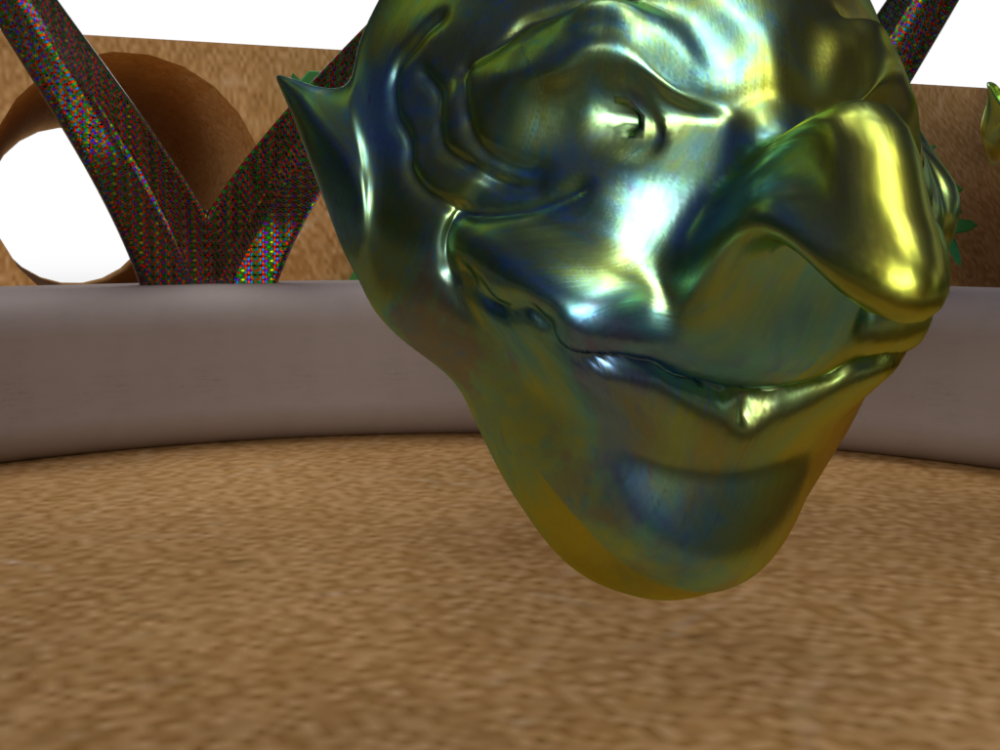
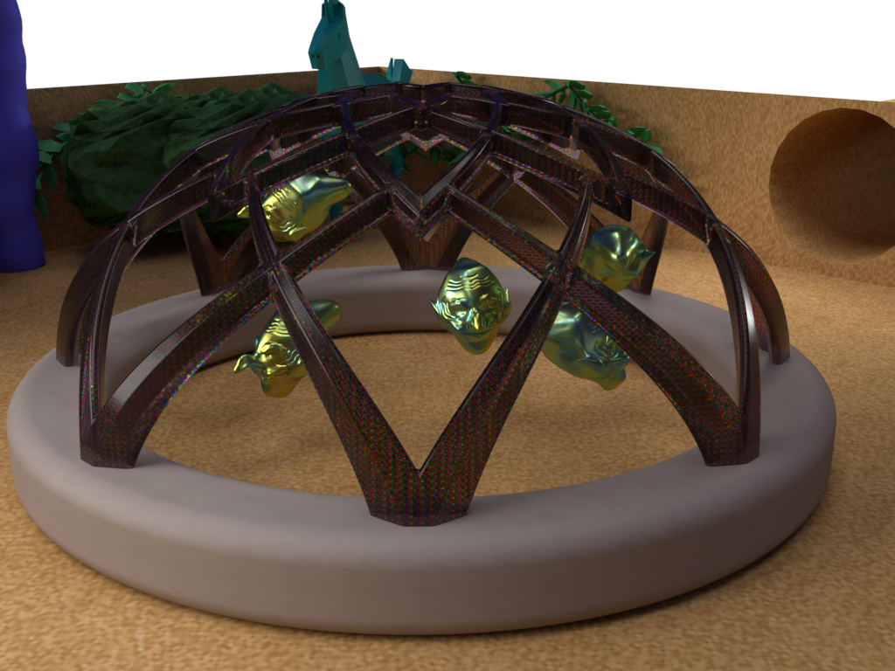
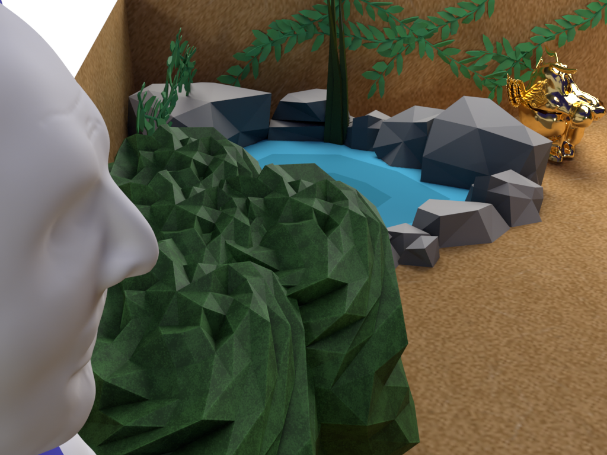
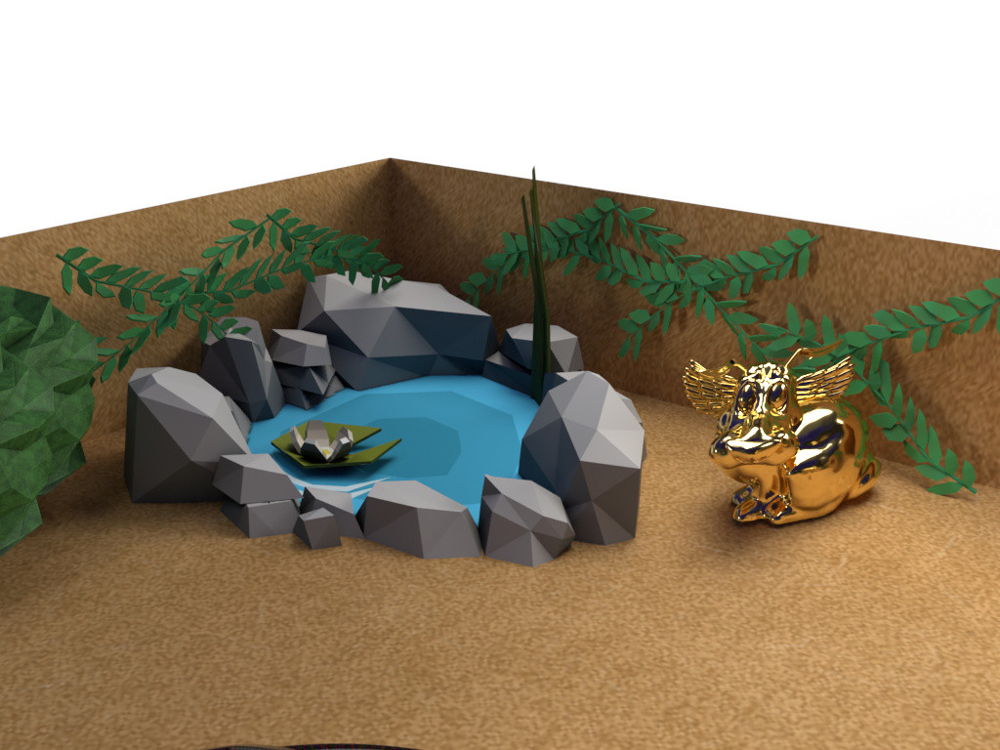
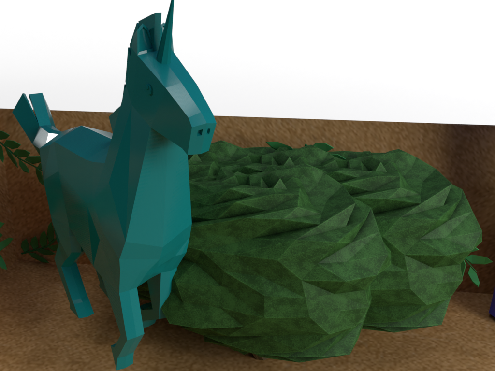
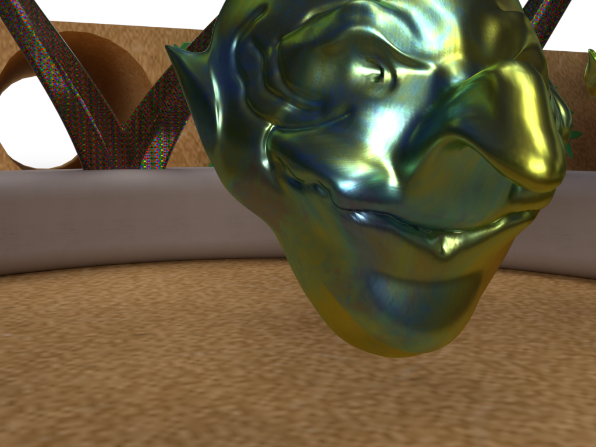
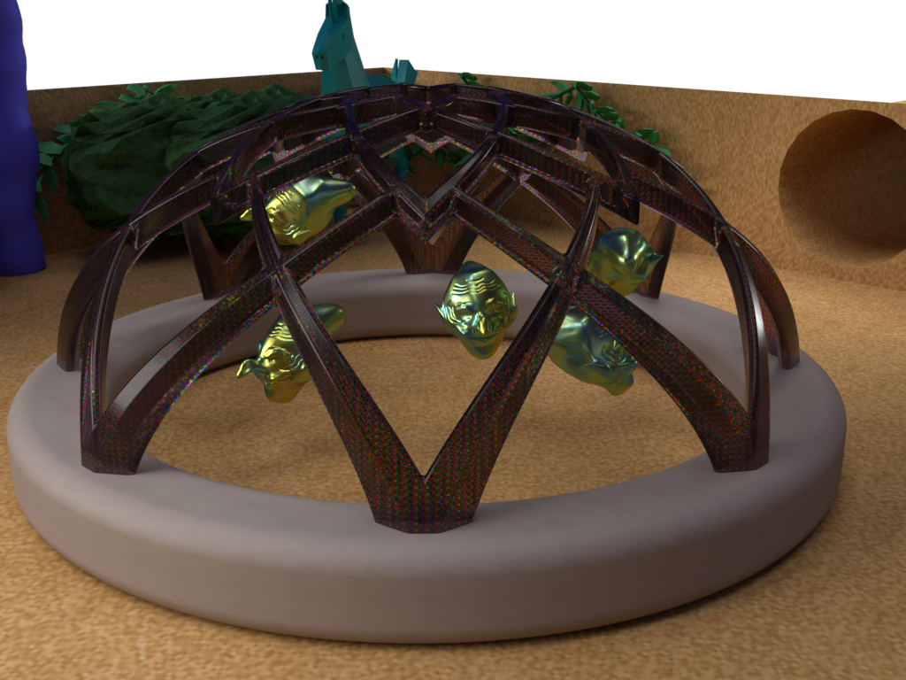
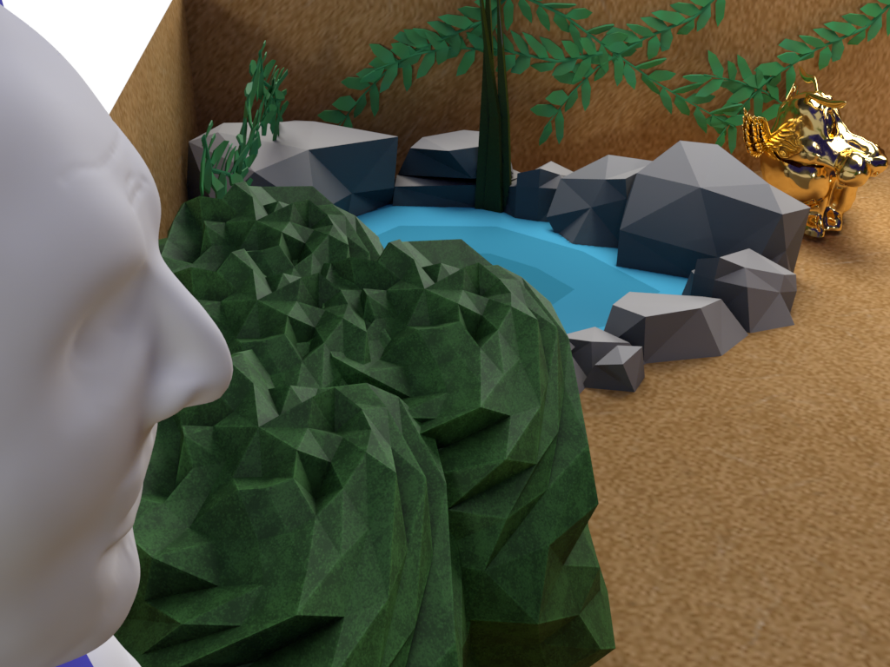

Our project name is “Mythical Grounds”. The project is supposed to give a feeling of nature but yet a feeling of being somewhere mystical. You would be able to walk into this place and hear the life of nature, birds chirping or even the water from the pond trickling down the stone. You might even feel the wind that goes through the bushes and or trees. The context of this project was that we decided to go with the theme of nature because of this quarantine. We wanted to make a mixture of mythological things with the surrounding environments of wildlife. As with the mythology, we have a story that depends on the good force versus the evil force. The goblin heads were the symbols of evil; where they can explode with hate and wickedness. With the unicorns and the fluffy dog-bunnies, they are the good forces within this piece where they keep the evil from escaping the area. With that in mind, we tie that to the present time with the quarantine. We wanted to make a mixture of mythological things with the surrounding environments of wildlife. As with the mythology, we wanted to go with a similar style with Norse myths. We have a story that depends on the good force versus the evil force. The goblin heads were the symbols of evil; where they can explode with hate and wickedness. With the unicorns and the fluffy dog-bunnies, they are the good forces within this piece where they keep the evil from escaping the area. It would be a place where people can only access if they were "pure-hearted" and or filled with serenity. With that in mind, we tie that to the present time with the quarantine. We hope that everyone is able to enjoy “Mythical Grounds” as it shows the ways of how nature is with art in it!
Eddy Benitez